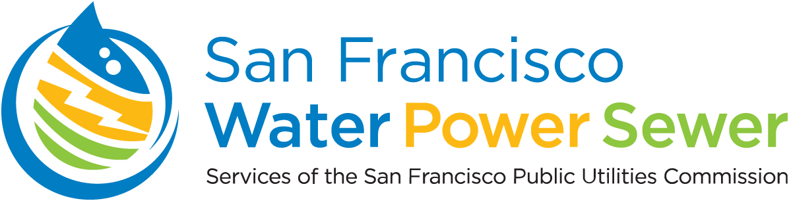

Alameda Watershed Center Parallel Audio Experience -
Testbed for basic web content
Linked below is the catalog of what will eventually be 8 different immersive audio experiences made available to
visitors through QR codes visible on each installation in the museum. These audio experiences are intended to
enhance the immersive quality of materials presented, while also making a parallel experience available
to those with vision impairment.
List of QR coded Exhibits